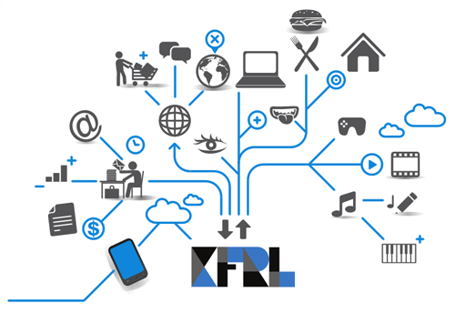
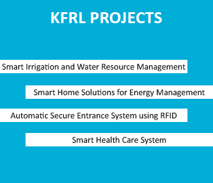
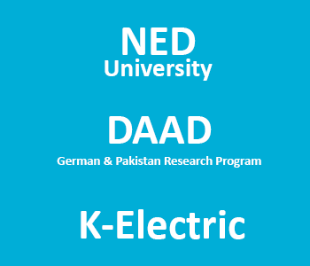

Koshish Foundation Research Lab

Koshish foundation research lab, an initiative towards, creating research and development based environment, producing professional and high quality engineers in the field of Information & Communication Technologies (ICT), and creating ways to step in the field of innovative, creative, efficient, and cost effective product design.
The foundation of this lab was laid down in the month of July, 2014 by Dr. Muhammad Khurram, the chair person of KFRL, with funding support provided by Koshish Foundation. By focusing on latest trends and emerging technologies throughout the globe, the main theme of this Lab was dedicated to Internet of Things (IoT) technology.
However, the projects in KFRL are not only limited to this field but main focus of this Lab is to develop something innovative in the field of IoT.

Two years are about to complete since the foundation of this Lab, the growth and achievements made by KFRL team is tremendous.
The team has worked on variety of IoT related projects i.e., Smart irrigation & Agricultural systems for water resource management and preserving food quality, Smart home solution for efficient energy management and security purposes, Smart warehouse vest design for avoiding sudden accidents faced by injured workers, Automatic secure entrance system by exploiting RFID technology, smart health care system for monitoring oxygen concentration and heart rate of patients, and many others project related to different technologies like satellite communication, Speech processing, and Image processing.
In addition to projects, KFRL also offers courses during vacations for undergraduate students which help them to improve their practical skills. KFRL team also actively participate in different exhibitions, competitions, events and also had won numerous prizes i.e., won second prize in DICE competition organized by Dow University of Health and Sciences (DUHS) by presenting Bluetooth enabled smart oxi-meter gadget there. KFRL has also published number of research papers proving that people here are doing quality based work.

In this short duration of time, KFRL team has proven their worth through hard work and passions, the team has successfully achieved funding grants from numerous national and international organizations i.e., NED University, and DAAD under German & Pakistan Research program. The team is also engaged in providing the solutions on demand basis to different local organizations like we are working for K-electric to replace their old control systems with enhanced plug & play versions.
One key to success of this Lab is the organization of team in a hierarchical fashion. Here we have students from PhD, Masters, and Bachelors who along with their studies carry out research work at KFRL and enjoy descent stipends. This hierarchical order help juniors learn from their seniors and produce quick and better results. The students here belong to different departments, which comes under the umbrella of IEEE faculty, that is why the Lab produces complete integrated solutions i.e., hardware and software which are efficient in every aspect.